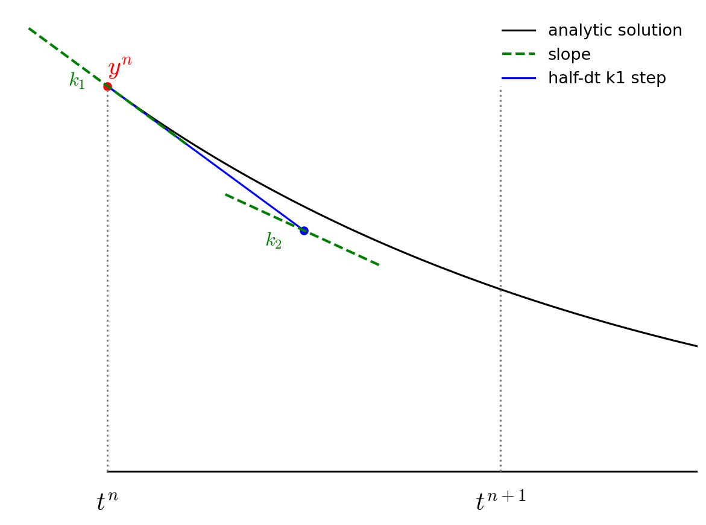
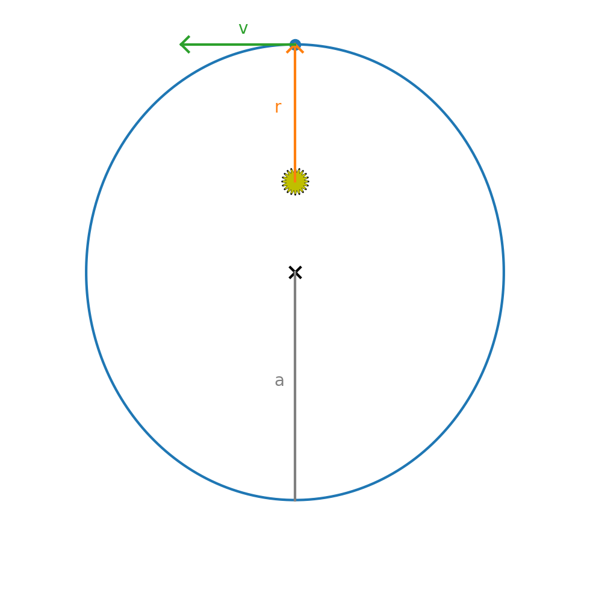

4th-order Runge-Kutta#
Now we consider a 4th order accurate method—4th order Runge-Kutta (RK4). For many problems, this method will work very well and as a result, RK4 is widely used.
We’ll consider a general system of first order differential equations:
The advance begins by estimating the derivatives (righthand side or slope) at time \(t^n\). We’ll call this \({\bf k}_1\).

We then follow the slope \({\bf k}_1\) to the midpoint in time, \(t^{n+1/2}\) and evaluate the slope there. We call the new slope \({\bf k}_2\).

We then go back to the start, but this time follow the new slope, \({\bf k}_2\) to the midpoint in time, \(t^{n+1/2}\). We again evaluate the slope here, and call it \({\bf k}_3\).

Finally, we go back to the start and follow \({\bf k}_3\) for the full timestep, to \(t^{n+1}\) and evaluate the slope there, calling it \({\bf k}_4\).

We then get the updated solution using a linear combination of the 4 slopes:

Note the similarity of RK4 to Simpson’s rule for integration.
Implementation#
We’ll again use the orbit_util.py module to get access to the common functions from the other integrators
import numpy as np
import matplotlib.pyplot as plt
import orbit_util as ou
Here’s our implementation. Again, it follows the same flow as the other methods, but now with a few more calls to the rhs()
function.
def int_rk4(state0, tau, T):
times = []
history = []
# initialize time
t = 0
# store the initial conditions
times.append(t)
history.append(state0)
# main timestep loop
while t < T:
state_old = history[-1]
# make sure that the last step does not take us past T
tau = min(tau, T - t)
# get the RHS
k1 = ou.rhs(state_old)
state_tmp = state_old + 0.5 * tau * k1
k2 = ou.rhs(state_tmp)
state_tmp = state_old + 0.5 * tau * k2
k3 = ou.rhs(state_tmp)
state_tmp = state_old + tau * k3
k4 = ou.rhs(state_tmp)
# do the final update
state_new = state_old + tau / 6.0 * (k1 + 2*k2 + 2*k3 + k4)
t += tau
# store the state
times.append(t)
history.append(state_new)
return times, history
Let’s try it out now.
state0 = ou.initial_conditions()
tau = 1.0/12.0
times, history = int_rk4(state0, tau, 1)
fig = ou.plot(history)

This already looks pretty good, even for this very coarse timestep.
Convergence#
We can look at the convergence of RK4
taus = [0.1, 0.05, 0.025]
for n, tau in enumerate(taus):
times, history = int_rk4(state0, tau, 1)
if n == 0:
fig = ou.plot(history, label=rf"$\tau = {tau:6.4f}$")
else:
ou.plot(history, ax=fig.gca(), label=rf"$\tau = {tau:6.4f}$")
fig.gca().legend()
<matplotlib.legend.Legend at 0x7f496895bb60>

for tau in [0.1, 0.05, 0.025, 0.0125, 0.00625]:
times, history = int_rk4(state0, tau, 1)
print(f"{tau:8} : {ou.error_radius(history):10.5g} {ou.error_position(history):10.5g}")
0.1 : 0.020244 0.1074
0.05 : 0.00054733 0.0039053
0.025 : 1.6779e-05 0.00016588
0.0125 : 5.2225e-07 7.9308e-06
0.00625 : 1.6305e-08 4.1917e-07
This is clearly converging faster than 2nd order. 4th order means that as we cut the timestep in half, the error should go down by \(2^4\) or 16.
Note
Beyond just converging faster, also compare the error here to the Euler and midpoint methods.
For a timestep of \(\tau = 0.025\), we are > 100 times more accurate than the midpoint method and
almost 100,000 times more accurate than Euler’s method.
So despite having to call the rhs() function more often, we are much more accurate than
those other methods.
Timestepping#
In the above examples, we always kept the timestep \(\tau\) fixed, but in general, finding the solution to a system of ODEs might have portions in time where the solution is changing rapidly and a smaller \(\tau\) would be needed. Likewise, is the solution is changing slowly, we can use a larger timestep.
Most ODE libraries use some form of local error estimation to measure how the large the error is in the solution and adjust the timestep (up or down) to achieve a desired accuracy.
To see why this might be needed, consider an elliptical orbit.

The initial conditions for a planet at perihelion (on the +y axis) are:
where \(a\) is the length of the semi-major axis and \(0 \le e < 1\) is the eccentricity. For an eccentric orbit, the velocity changes throughout the orbit, so when the planet is at perihelion, the solution is changing rapidly.
Exercise
Integrate an orbit with a large eccentricity (like \(e = 0.8\)). Pick a timestep such that visually the orbit looks okay. Now make a plot of the total energy per unit mass, \(\mathcal{E}\) vs time:
At what point in the orbit is the energy conservation the worst?
First the initial conditions
a = 1.0
e = 0.6
x0 = 0
y0 = a * (1 - e)
u0 = -np.sqrt(ou.GM / a * (1 + e)/(1 - e))
v0 = 0
state0 = ou.OrbitState(x0, y0, u0, v0)
Now we can integrate
tau = 0.025
T = 1
times, history = int_rk4(state0, tau, 1)
fig = ou.plot(history)

We can compute the energy / unit mass now.
E = [0.5 * (state.u**2 + state.v**2) - ou.GM / np.sqrt(state.x**2 + state.y**2)
for state in history]
fig = plt.figure()
ax = fig.add_subplot(111)
ax.plot(times, E/E[0])
ax.set_xlabel("t [yr]")
ax.set_ylabel("$\mathcal{E}/\mathcal{E}(t=0)$")
<>:9: SyntaxWarning: "\m" is an invalid escape sequence. Such sequences will not work in the future. Did you mean "\\m"? A raw string is also an option.
<>:9: SyntaxWarning: "\m" is an invalid escape sequence. Such sequences will not work in the future. Did you mean "\\m"? A raw string is also an option.
/tmp/ipykernel_2609/3950971689.py:9: SyntaxWarning: "\m" is an invalid escape sequence. Such sequences will not work in the future. Did you mean "\\m"? A raw string is also an option.
ax.set_ylabel("$\mathcal{E}/\mathcal{E}(t=0)$")
Text(0, 0.5, '$\\mathcal{E}/\\mathcal{E}(t=0)$')

Notice that the energy conservation is not good, and the conservation is worst at perihelion when the solution is changing fastest.
C++ implementation#
Here’s a C++ implementation of the 4th order Runge Kutta that follows the same layout as the python version here: orbit_rk4.cpp
#include <iostream>
#include <vector>
#include <iomanip>
#include <cmath>
#include <numeric>
#include <limits>
#include <fstream>
const double GM = 4.0 * M_PI * M_PI;
struct OrbitState {
// a container to hold the star positions
double x{};
double y{};
double u{};
double v{};
OrbitState(double x0, double y0, double u0, double v0)
: x{x0}, y{y0}, u{u0}, v{v0}
{}
OrbitState() {}
OrbitState operator+(const OrbitState& other) const {
return OrbitState(x + other.x, y + other.y, u + other.u, v + other.v);
}
OrbitState operator-(const OrbitState& other) const {
return OrbitState(x - other.x, y - other.y, u - other.u, v - other.v);
}
// this handles OrbitState * a
OrbitState operator*(double a) const {
return OrbitState(a * x, a * y, a * u, a * v);
}
};
inline
std::ostream& operator<< (std::ostream& os, const OrbitState& s) {
os.precision(6);
os << std::setw(14) << s.x
<< std::setw(14) << s.y
<< std::setw(14) << s.u
<< std::setw(14) << s.v;
return os;
}
// this handles a * OrbitState
inline
OrbitState operator*(double a, const OrbitState& state) {
return OrbitState(a * state.x, a * state.y, a * state.u, a * state.v);
}
class OrbitsRK4 {
// model the evolution of a single planet around the Sun using
// gravitational interaction of three stars
private:
// a vector to store the history of our orbit
std::vector<OrbitState> history;
std::vector<double> time;
public:
OrbitsRK4(const double a, const double e)
{
// put the planet at perihelion
double x0 = 0.0;
double y0 = a * (1.0 - e);
double u0 = std::sqrt((GM / a) * (1.0 + e) / (1.0 - e));
double v0 = 0.0;
history.push_back(OrbitState(x0, y0, u0, v0));
time.push_back(0.0);
}
int npts() {
// return the number of integration points
return time.size();
}
double get_time(const int n) {
// return the physical time for step n
return time[n];
}
OrbitState& get_state(const int n) {
// return a reference to the state at time index n
return history[n];
}
double energy(const int n) {
// return the energy of the system for timestep n
const auto& state = history[n];
// kinetic energy
double KE = 0.5 * (std::pow(state.u, 2) + std::pow(state.v, 2));
double PE = -GM / std::sqrt(std::pow(state.x, 2) + std::pow(state.y, 2));
return KE + PE;
}
OrbitState rhs(const OrbitState& state) {
// compute the ydot terms
double dxdt = state.u;
double dydt = state.v;
double dx = state.x;
double dy = state.y;
double r = std::sqrt(dx * dx + dy * dy);
double dudt = -GM * dx / std::pow(r, 3);
double dvdt = -GM * dy / std::pow(r, 3);
return OrbitState(dxdt, dydt, dudt, dvdt);
}
void integrate(const double dt_in, const double tmax) {
// integrate the equations of motion using 4th order R-K
// method
double t{0.0};
double dt{dt_in};
while (t < tmax) {
dt = std::min(dt, tmax - t);
const auto &state_old = history.back();
auto ydot1 = rhs(state_old);
OrbitState state_temp{};
state_temp = state_old + 0.5 * dt * ydot1;
auto ydot2 = rhs(state_temp);
state_temp = state_old + 0.5 * dt * ydot2;
auto ydot3 = rhs(state_temp);
state_temp = state_old + dt * ydot3;
auto ydot4 = rhs(state_temp);
// final solution
OrbitState state_new = state_old + (dt / 6.0) *
(ydot1 + 2.0 * ydot2 + 2.0 * ydot3 + ydot4);
// successful step
t += dt;
// store the new solution -- this will automatically be
// used as the "old" state in the next step
time.push_back(t);
history.push_back(state_new);
}
}
};
int main() {
OrbitsRK4 o(1.0, 0.3);
o.integrate(0.05, 2.0);
std::ofstream of("orbit_rk4.dat");
for (int n = 0; n < o.npts(); ++n) {
const auto& state = o.get_state(n);
of << std::setw(14) << o.get_time(n);
of << state;
of.precision(10);
of << std::setw(18) << o.energy(n);
of << std::endl;
}
}